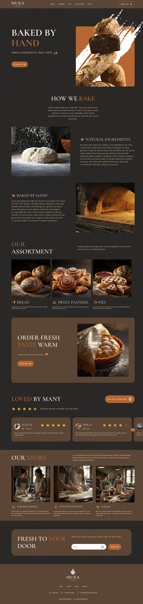
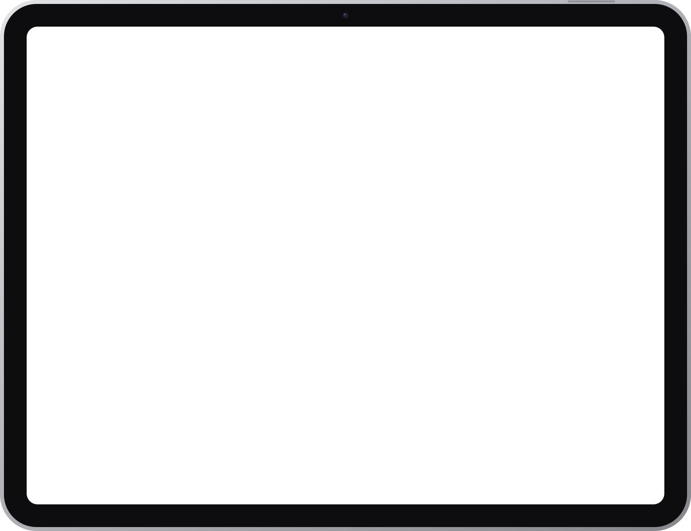
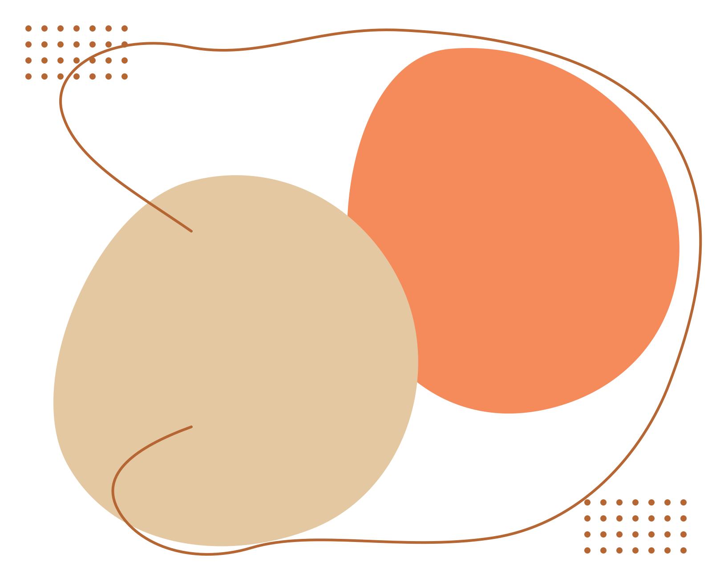

UX/UI case study · Concept work
UX/UI case study · Concept work
Muka
An editorial website for a local artisan bakery
Muka is a website concept for a local bakery with daily baking and same-day delivery. I set its visual and UI direction: a landing page of nine sections that shows handmade bread and pastries through material, texture and traces of work.
- Project typeConcept project
 PlatformResponsive website
PlatformResponsive website RoleUX/UI designer
RoleUX/UI designer ScopeVisual concept and UI
ScopeVisual concept and UI




 The project in numbers
The project in numbers
- 5design principles
- 15tiles on the moodboard
- 2typefaces
- 4core colours
- 9landing page sections
- 3product categories
 01 · About the project
01 · About the project
Handmade bread, a calm online experience
A local artisan bakery with daily baking and same-day delivery. The project presents its handmade bread and pastries through a clear and calm online experience.
The approach
- What the design relies on
- Material, texture and traces of work, in place of visual storytelling.
- The interface
- It stays restrained and leaves room for the product, so trust can build naturally before any call to action appears.
- Keywords
- Editorial approach
- Material-driven design
- Artisan bakery
- Local product
- Digital experience

 02 · Design intent
02 · Design intent
Five principles behind every decision
Each principle sets a rule the landing page follows: for its structure, decoration, type, colour and the trust it builds.
- 01
Editorial structure
The interface is built like an editorial layout, with a clear hierarchy, pauses and a steady reading rhythm.
- 02
Visual restraint
The design avoids decorative elements on purpose and keeps attention on the product and the content.
- 03
Typography as structure
Type organises the content, guides attention and sets the tone of the whole page.
- 04
Colour as atmosphere
Colour creates mood and depth. It is not there to grab attention or to dominate the interface.
- 05
Trust-oriented experience
The page helps visitors feel confident before they make any decision.
 03 · Moodboard
03 · Moodboard
Moodboard and references
The board sets the tone of the brand: the Muka logo, close-ups of crust and flour, hands at work, a bakery window and bread in warm light.
- On the board
- Fifteen tiles in a 3 × 5 grid under the logo: eight photos, six lines of copy and the logo once more in the centre.
- Lines on the board
- “Freshly baked every morning, crafted with care.”
- “We bake with simple ingredients: flour, water, time, and love.”
- “Morning favorites”
- “Handcrafted daily”
- “The smell alone makes my mornings better”
- “Order now”
- Closing line
- Bread that feels like home

 04 · Typography and colour
04 · Typography and colour
Two typefaces, four colours
Typography builds the structure and colour sets the atmosphere. Each colour has its own role; the accent marks the interactive elements.
- Cormorant GaramondHeadlines · Bold · 96 / 104
- Work SansBody text · Regular · 24 / 36
- 4core colours, each with its own role
- Primary accent · #B66633Inspired by baked crust and heat. Used for interactive elements, to guide attention.
- Dark background#2A2A2A · depth and focus for light type
- Soft neutral#E4C8A2 · a warm tone that balances the dark surfaces
- Light text#F6EFE9 · body and secondary copy on the dark background
- 2typefaces: a serif for the headlines, a sans serif for reading
Type and colour, up close
Drag the frames

 05 · Landing page design
05 · Landing page design
One page, nine sections
The page moves from the promise and the way the bread is made, through the assortment and the order, to reviews, the bakery’s story and a sign-up for the daily menu.
-
01
Header
The logo, links to Bread, Pastries, Pies, How we bake and Story, and an outlined Order now button.
-
02
Hero
“Baked by hand”, with “hand” in the accent colour, the line “Simple ingredients. Real taste” and the first Order now. The bread stands on an accent block with a white brush stroke.
-
03
How we bake
A short text about slow, honest baking, then two blocks with photos: Natural ingredients and Baked by hand.
-
04
Our assortment
Three categories, each with a photo, an icon and one line: Bread, Sweet pastries and Pies.
-
05
Order
“Order fresh, taste warm” on a brown card with a pie, the line “Fresh bread is one click away” and the second Order now, right after the products.
-
06
Loved by many
The average rating, a button to read every review on Google Maps and review cards with a photo, name, city and stars that scroll sideways.
-
07
Our story
Three steps with photos of the bakers: The beginning, Our philosophy and Today.
-
08
Fresh to your door
An email field to place an order or get the daily menu.
-
09
Footer
The logo with its wheat mark, the menu, the city, a phone number and an email address.
 06 · Outcome
06 · Outcome
Clarity, warmth and honest decisions
A bakery concept built with attention to structure, rhythm and atmosphere.
The moodboard sets the mood and the five principles set the rules; type and colour put both into practice on a landing page of nine sections.
Bread that feels like home
- 01
Moodboard and references
- 02
Five design principles
- 03
Type and colour system
- 04
A nine-section landing page


 Based in Hachenburg, Germany
Based in Hachenburg, Germany
Let’s design for real needs
I’m open to UX/UI designer roles in Germany. Email or call me, or write to me on LinkedIn or Telegram.